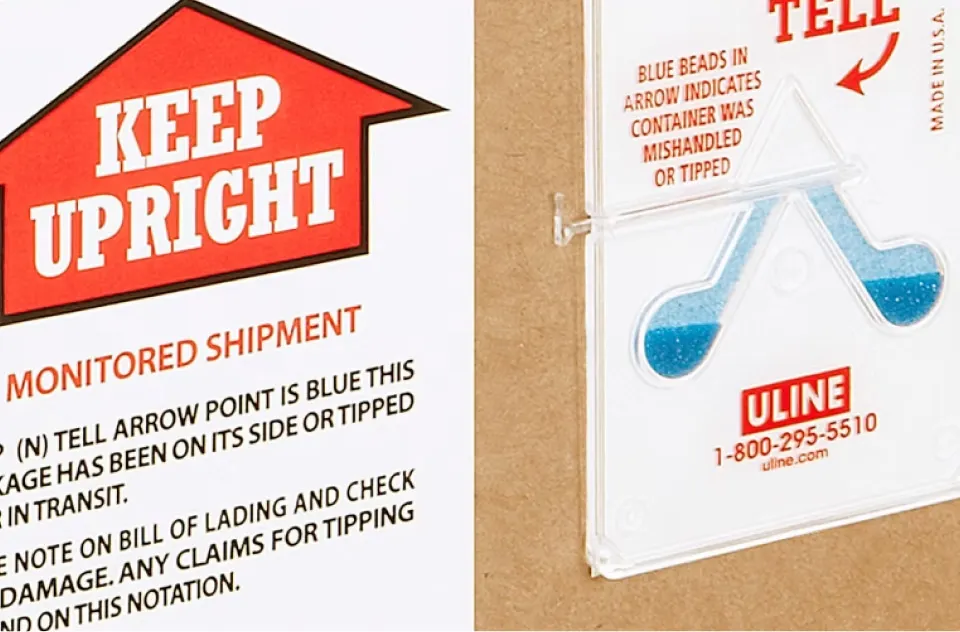
בשרשרת האספקה, כשכל גורם יכול לגלגל אחריות הלאה, קשה לאתר מי אחראי לפגיעה במוצר. הטריק ההנדסי מ־1970 מדגים איך שקיפות של מידע בזמן אמת משנה התנהגות בשטח, מחזקת אחריות ומפחיתה נזקי שינוע
כשכיבוי אוטומטי באפליקציות חניה שמור למסלולי פרימיום, חוסר הנוחות של המשתמשים הופך למנגנון רווח. מה ההבדל בין Upsell מוצרי לגיטימי לבין חיכוך שמייצר שחיקה, ומה חושפים פתרונות מאולתרים של משתמשים על כשלי המוצר
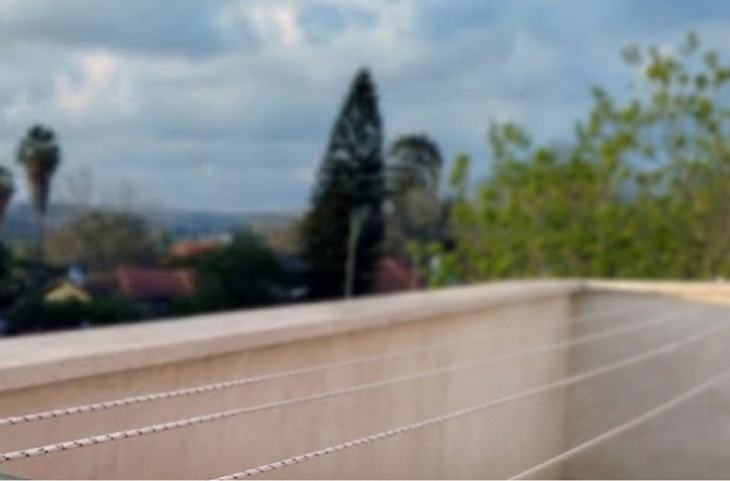
עיצוב הוא לפני הכל חשיבה ופיצוח. תהליכי עיצוב מקצועיים מתבססים על ניסיון, חוכמה, סקרנות ויצירתיות אנושית. האם באמת יש דרך קיצור טכנולוגית?
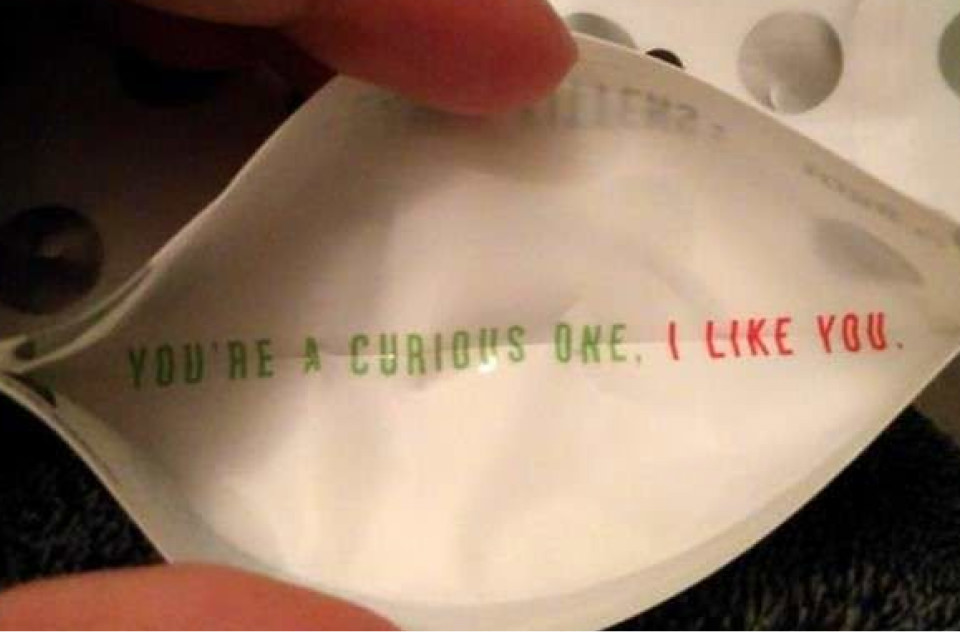
איך הפתעות מכוונות התפתחו לחוויית משתמש בעולם הפיזי והדיגיטלי, ולמה Micro-delights הם הרבה מעבר לגימיק כשמכוונים לחיבור רגשי ושיתוף אורגני
סבתה של דבורה אדלר נטלה בטעות תרופה שיועדה לבעלה, אז היא עיצבה מחדש את בקבוקי התרופות מבלי לדעת שתשפיע על תעשייה שלמה. רק שפתרון מוצלח לא תמיד שורד מול שיקולים עסקיים ותפעוליים
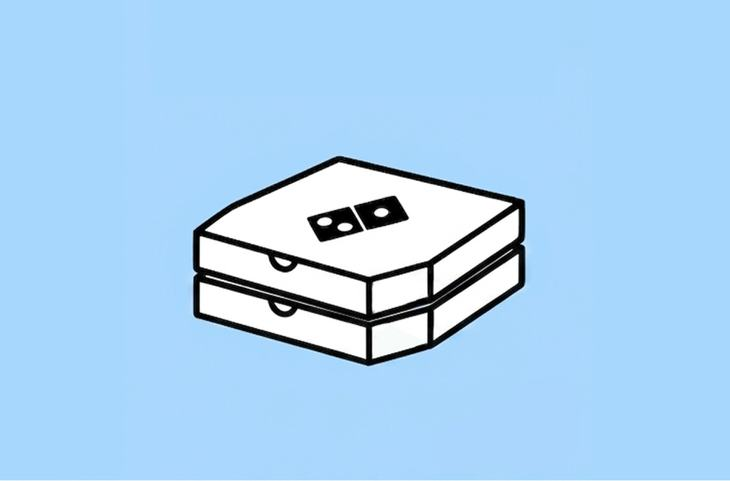
המשימה הראשונה שאילון מאסק הטיל על ג׳ין מקניל, כאשר מונה לנשיא המכירות של טסלה היתה לקצר את תהליך הזמנת טסלה אונליין. הפיתרון עבר דרך שיעור מרתק מדומינוס פיצה
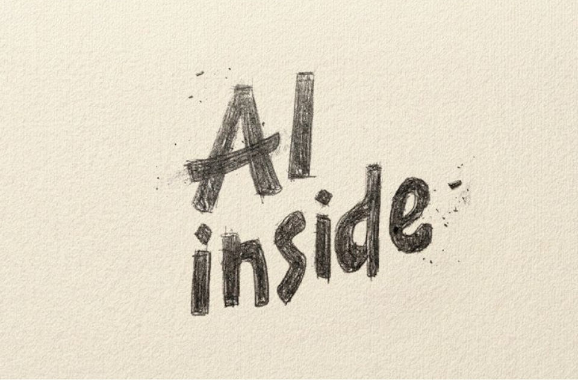
לקוח שיתף אותי שהוא פשוט מדלג על כל מי שמופיע לו AI בטייטל, אז חזרתי למהלך של Intel inside כדי לבחון את ההבדל בין טכנולוגיה שמייצרת בידול אמיתי לבין תווית גנרית שמחליפה הצעת ערך אמיתית
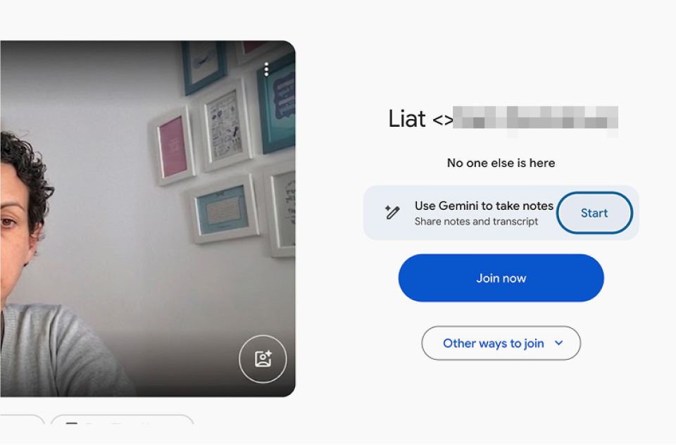
רגע לפני שהפגישה התחילה, גוגל יצרה תסכול שלא היה קיים קודם, והוכיחה איך חוסר תיאום בין חלקי המוצר יוצר מבוי סתום, וגם למה חוויית משתמש טובה מחייבת הסתכלות על המסע כולו
שיחה אמיתית שהייתה לי עם יזם שפנה אלי חשפה את הפער בין תפיסת העיצוב המעוותת ברוח התקופה לבין תפקידו האמיתי של עיצוב והסתיימה באיחולי הצלחה
הבחירה לרכוב עם הבת שלי לבית הספר דרך היער, הפכה לזמן של שיחה, התבוננות וקשר. מתוך החוויה הזו יצא לי להרהר על החיפוש האוטומטי אחר קיצורי דרך, ועל הערך של תהליך שמאפשר עיבוד עמוק וחוויה אנושית בבניית מוצרים ובחיים עצמם
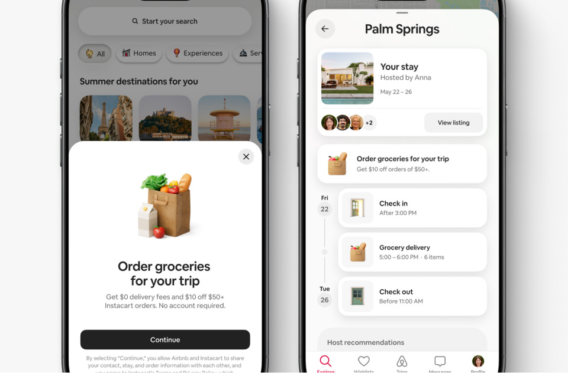
שירות חדש מבטיח לאורחים התחלה נוחה לחופשה, אבל מוסיף כאב ראש למארחים. דרך הדוגמה אני בוחנת איך פיצ׳ר בשוק דו-צדדי מעביר חיכוך מצד אחד לאחר, ואת המתח בין חוויית לקוח, עומס תפעולי ושאיפות הצמיחה של הפלטפורמה
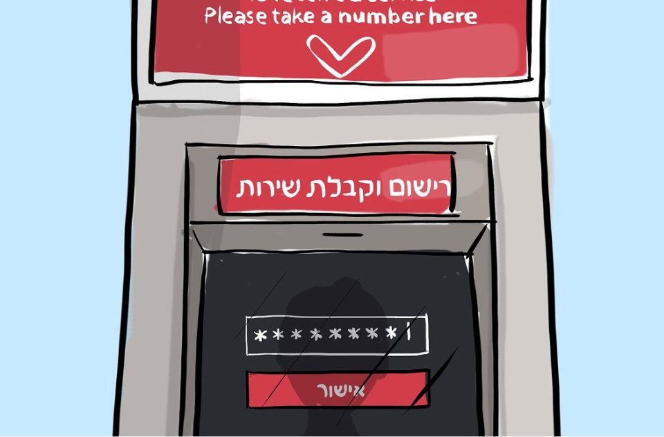
שיחה עם פקיד הבנק הוכיחה לי שוב איך תקלה מוכרת הופכת לחלק מהשגרה, ולמה UX כולל גם התייחסות לשגיאות, רציפות בין שלבים והבנת ההשלכות של החלטה קטנה על חוויית השירות כולה
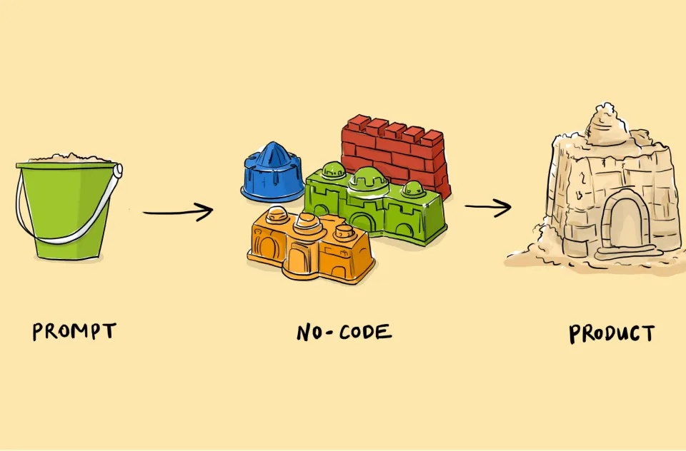
הטענה הנפוצה היא שאפשר להתחיל בנו-קוד ולהחליף אחר כך. לא בטוחה ש-Airbnb ו-Lemonade היו מגיעות רחוק אם היו פועלות כך בתחילת דרכן
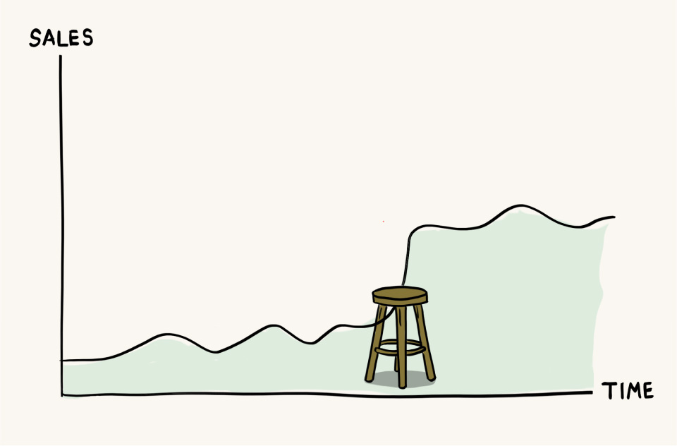
תצפית קצרה של פאקו אנדרהיל במרכז קניות בניו יורק חשפה בעיה אנושית פשוטה בחוויית הקנייה, הובילה לפתרון מיידי והכפילה את המכירות. התבוננות מגלה לעיתים קרובות הזדמנות עסקית שחומקת מתחת לרדאר
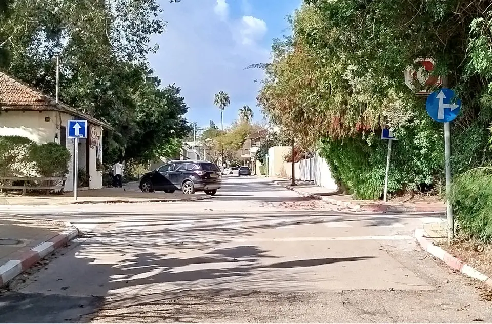
עכשיו כשמפתחים יכולים לעצב ומעצבים יכולים לפתח, הכל קל. אז זהו שלא. במהלך טיול בשכונה קיבלתי המחשה לפער בין פתרון שלוקח בחשבון את ההקשר והפרטים הקטנים, לבין פתרון שנראה מספיק טוב
ג׳וני אייב, לשעבר המעצב הראשי של אפל וזה שעומד מאחורי מסך המגע, טוען שתעשיית הרכב אימצה את העיצוב החדשני של מסכי המגע כטרנד, ופגעה בעקרון בסיסי ובבטחון של כולנו על הכביש
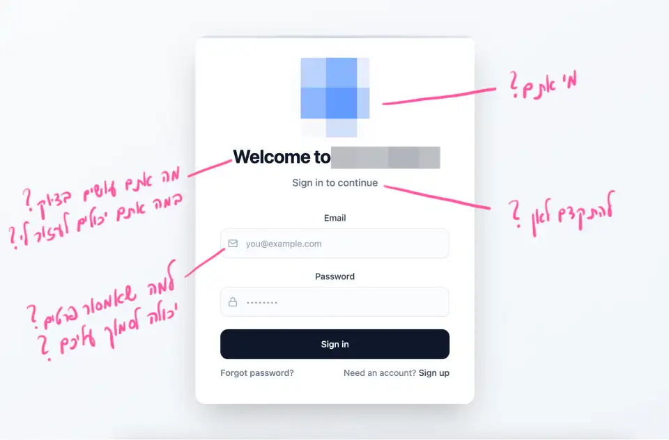
זה שהדאטה נשמרת, ה-API מחובר והאוטומציות רצות זה אחלה. אבל זה ממש לא מבטיח שיש לכם מוצר או שהמשתמשים בכיס שלכם. דוגמה קלאסית
בשירות הצבאי גיליתי שתהליך שחרור שולח קצינים לנסיעות מיותרות רק כדי להעביר טופס לחתימה, אז קיצרתי את התהליך מכמה שעות לחמש דקות. מאז אני אוהבת לזהות את הנסיעה המיותרת לבקו״ם בכל מוצר, לייעל תהליכים ולהסיר חיכוך מיותר
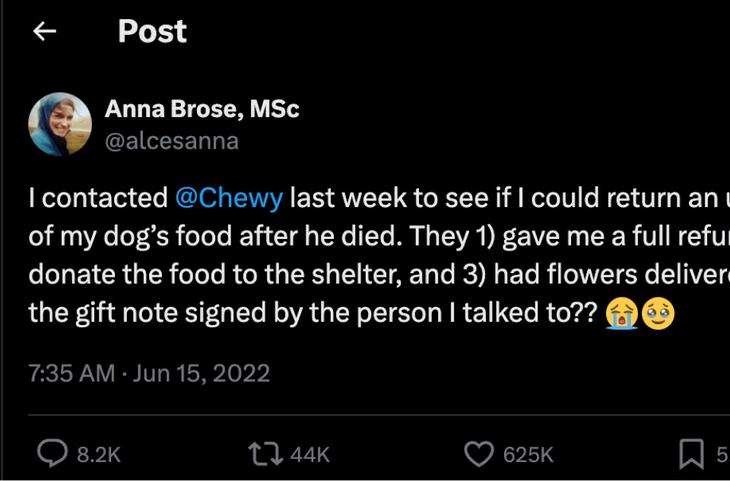
הכלב של אנה ברוז מת. שבורת לב, היא פנתה לחנות של אוכל הכלבים כדי לקבל החזר על שק האוכל שלא נפתח. סיפור על אמפתיה וחיבור רגשי, שהתעלמו ממדדי יעילות והשיגו הרבה יותר
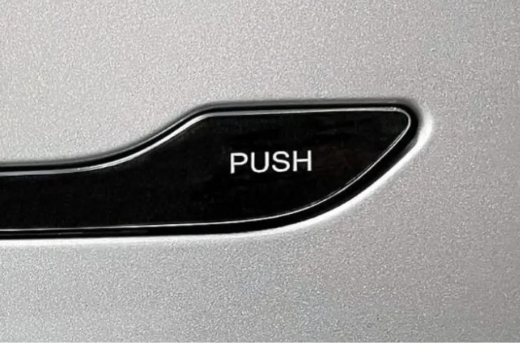
ידית הדלת הנסתרת של Tesla Model Y השאירה אותי מול פעולה בסיסית שלא הבנתי איך לבצע. דרך החוויה והפתרונות המאולתרים של נהגים, אני בוחנת את הפער בין אסתטיקה לשימושיות, את הרמזים שהעיצוב נותן לפעולה ואת הצורך להתחשב גם בנוסעים מזדמנים
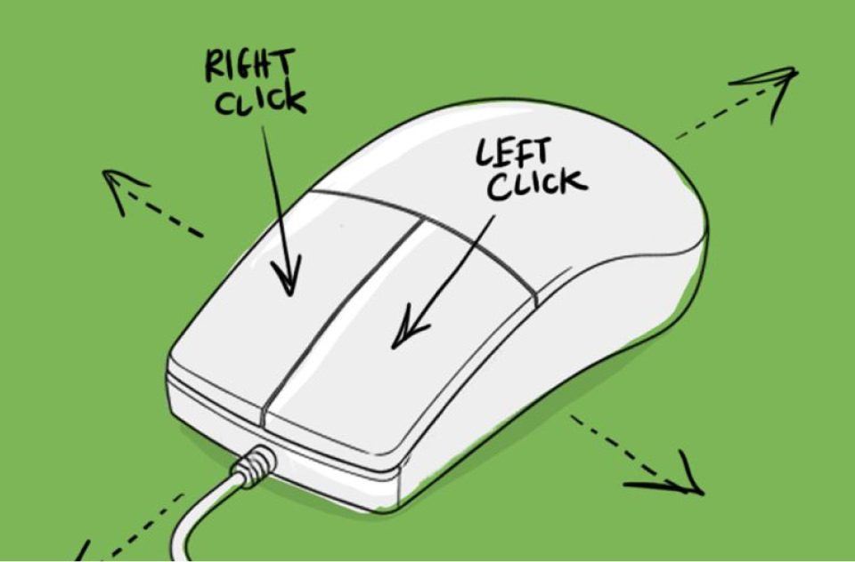
מסתבר ש-Solitaire, Minesweeper ו-Hearts היו בכלל דרך לתרגל מיומנויות שנדרשו לשימוש בממשק הגרפי של Windows. איך הם הפכו פעולות עכבר לתרגול מהנה, ומה אפשר ללמוד מכך על אונבורדינג שמלמד משתמשים דרך פעולה והתנסות במקום להסתפק בהוראות ובהסברים
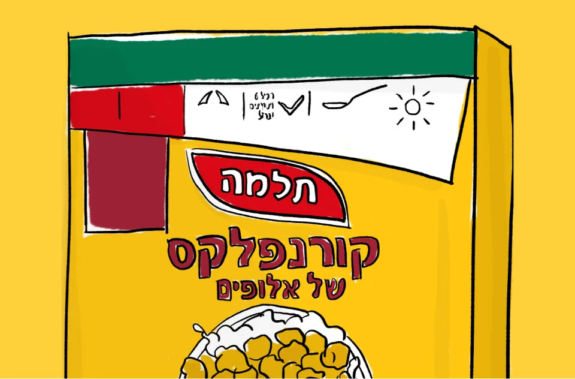
קללת הידע: הפער בין מי שמכיר את המוצר היטב לבין מי שפוגש אותו לראשונה. מקרה מייצג לאיך הוראות חסרות, עומס מידע או הסבר שמגיע מוקדם מדי יוצרים תסכול, ומה אפשר ללמוד מכך על תזמון מידע ועיצוב תהליכי אונבורדינג ברורים
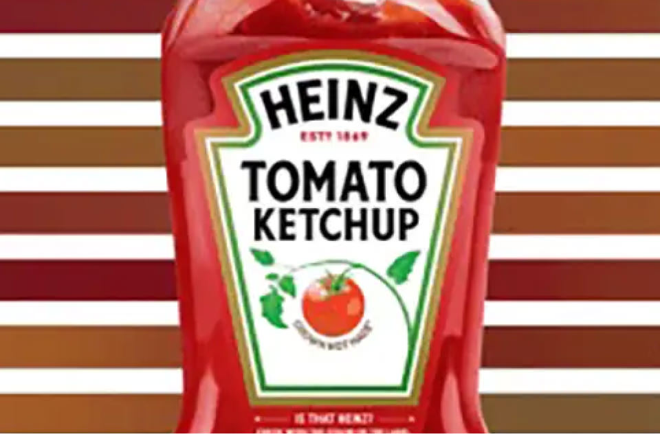
מה עושה Heinz כאשר מגלה שמסעדות ממלאות בקבוקים שלה בקטשופ של חברות זולות יותר? מהלך מבריק המדגים איך חשיבה מחוץ לקופסה מחברת עיצוב מוצר, אמון ושיווק, ומאפשרת לצרכנים לרתום אותם לטובת חשיפת הזיוף
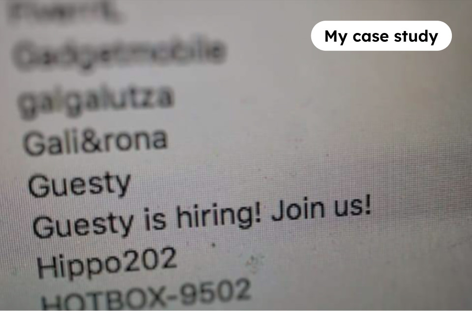
בתחילת הדרך ב-Guesty, כשלא יכולנו להתחרות בתקציבי הגיוס של החברות הגדולות, חיפשתי הזדמנות דלת תקציב שתאפשר לנו חשיפה גבוהה ובקלות. סיפור ברוח פאנדינג טים, על פתרון בעיות בסטארטאפ
הזמנה מפתיעה לכנס יצרה הזדמנות חד פעמית עבורנו ב-comedy.com. איך פעלנו כסטארטאפ בתחילת דרכו כדי לנצל את ההזדמנות בתקציב נמוך ובלוחות זמנים צפופים, ומה השגנו בדרך
מתוך העבודה המשותפת שלי עם צוותי מוצר, אני מסבירה למה הדיון צריך להתחיל במוטיבציה, בנתונים ובתעדוף, ואיך הגדרת בעיה טובה משאירה מקום לפתרונות מדויקים יותר בלי לקבע מראש את תהליך העיצוב
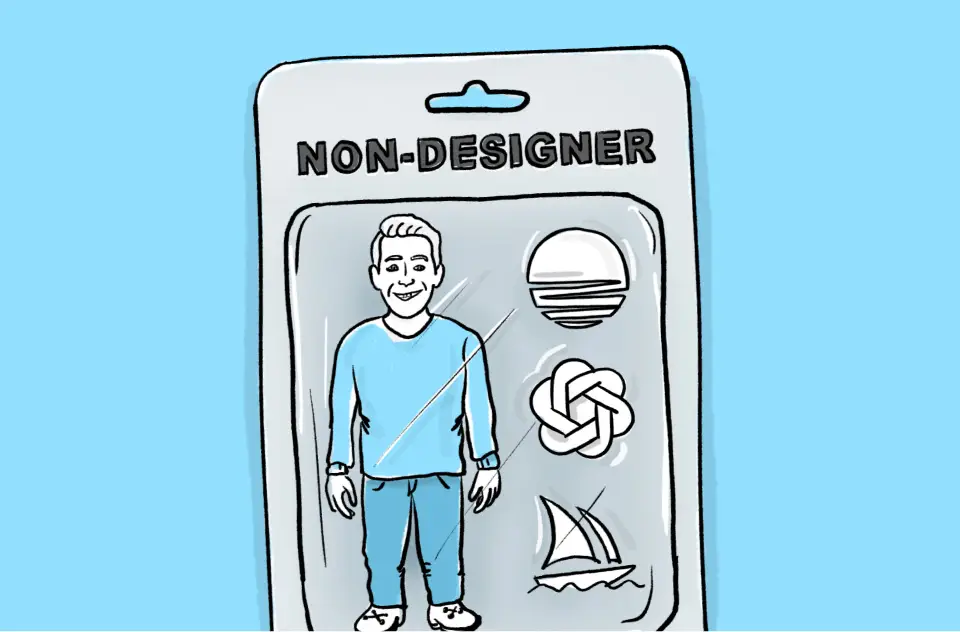
היכולת לייצר מסכים בעזרת AI אינה מחליפה את החשיבה שהופכת אותם לפתרון עיצובי. מול ההצפה בכלים וקיצורי דרך, אני מתעכבת על היתרון האנושי שמעצבים מביאים לתהליך: הבנה, שיקול דעת ויצירתיות, ועל החשיבות של שמירת המקום שלהם בעבודה גם כשהביצוע נעשה מהיר ונגיש יותר
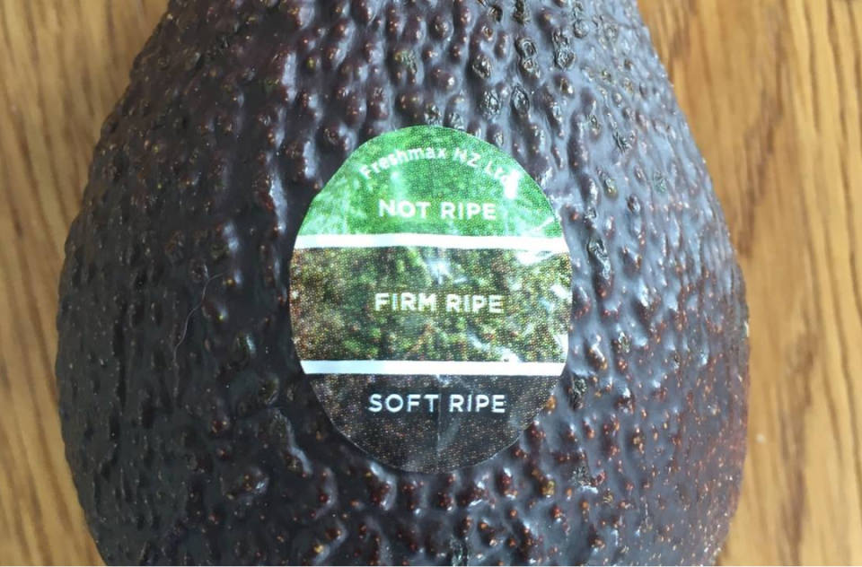
מדבקה של Freshmax על אבוקדו מדגימה איך עיצוב פשוט יכול לעזור ברגע של בחירה וחוסר ביטחון. על הקשר בין הבנת הפסיכולוגיה של המשתמש לבין שימוש יומיומי
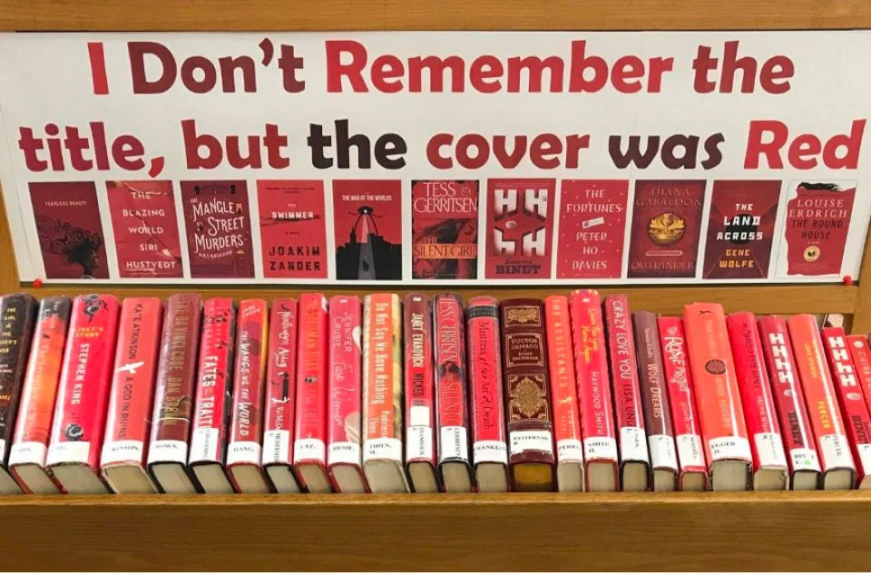
דוגמה שממחישה למה אנשי Customer Success ושירות הם מקור חשוב לתובנות משתמשים, ואיך הקשבה למי שפוגשים לקוחות מדי יום יכולה לאתגר את שיטת הארגון הרשמית של המוצר
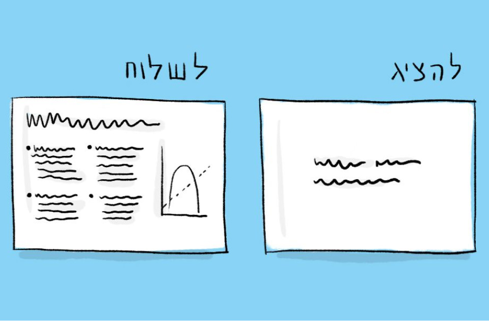
כשמצגת עמוסת טקסט מתחרה בדובר, הקהל נדרש לבחור בין קריאה להקשבה. על ההבדל בין מצגת שנשלחת לקריאה לבין מצגת שמלווה הצגה, ואיך חלוקה לנושאים, טקסט קצר והקשר חזותי עוזרים להפחית עומס קוגניטיבי ולשמור את הקשב על המסר
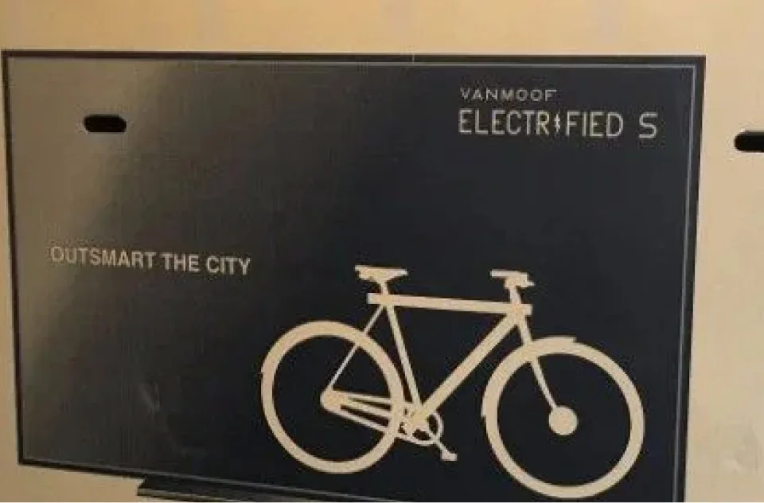
What makes a retail experience memorable? Through examples from Campbell’s, IKEA, a public library and VanMoof, I explore how observing customer behavior reveals opportunities beyond the expected purchase journey
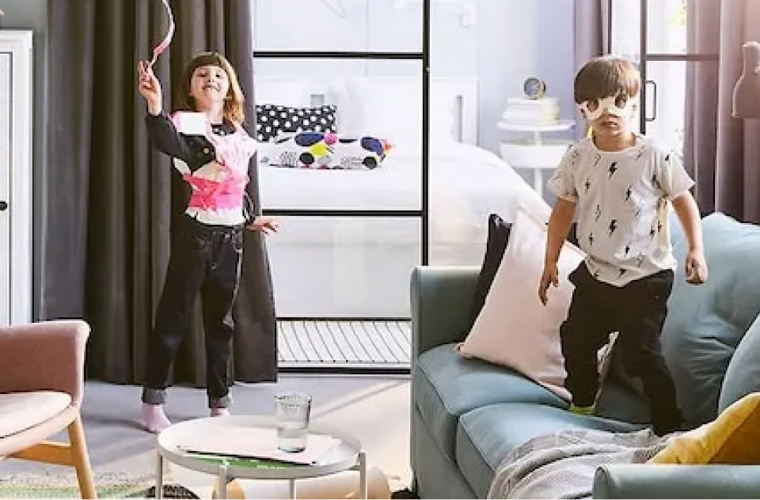
From touchscreen-friendly mittens and cooking instructions to store displays and assembly guides, I explore how practical solutions connect the customer journey
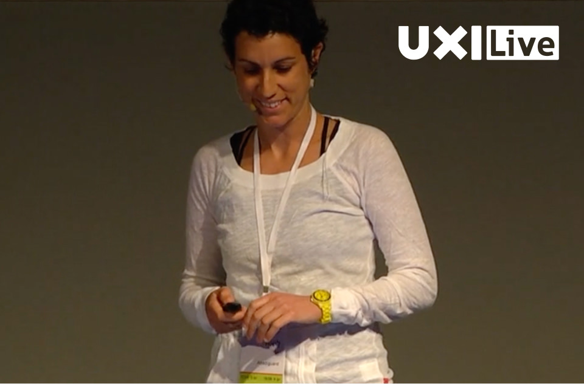
בהרצאה שלי ב-UXI Live 2013 אני בוחנת איך פרסום גרילה הופך את העולם לממשק ואת הקהל מצופים למשתמשים. דוגמאות מהמרחב הפיזי והדיגיטלי מדגימות איך אינטראקציה עם מוצר ופעולות יומיומיות יכולות להעביר מסר, להמחיש ערך ולקדם רעיון באמצעות חוויה פעילה ולא רק צפייה בפרסומת
No pitch, no pressure, completely anonymous.Just a quick check to see if your need aligns with my focus so neither of us wastes time